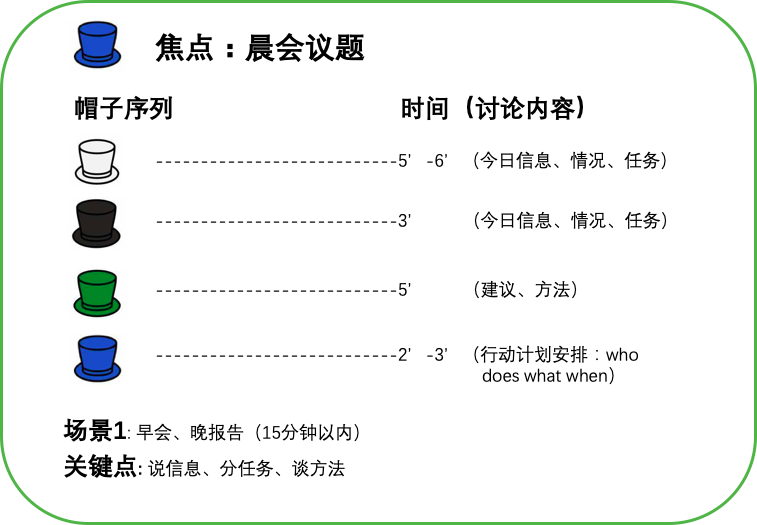
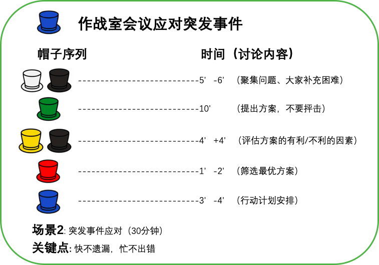
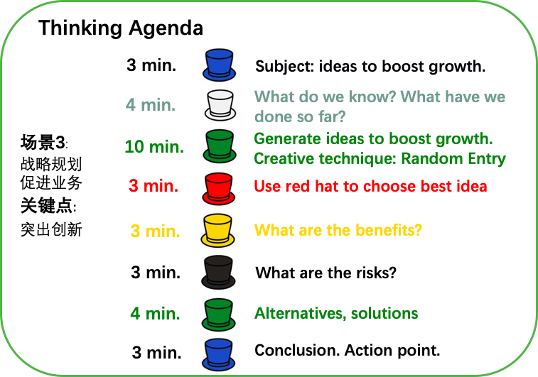

六顶思考帽
六顶思考帽®是爱德华·德博诺博士开发的一种思维训练工具，它提供了“平行思维”的工具，全面思考问题的模型，避免将时间浪费在互相争执上。
人们参加会议都是抱着解决问题的共同目的而来的，然而发生争吵很多时候吵的并不是事实，而是情绪。人们总是还未真正理解对方的观点就陷入了和对方喋喋不休的争执之中。
所谓“六顶思考帽”是指蓝帽（指挥帽）、白帽（数据帽）、红帽（情感帽）、黄帽（乐观帽）、黑帽（谨慎帽）、绿帽（创新帽）。
六顶思考帽®是爱德华·德博诺博士开发的一种思维训练工具，它是目前全球最有影响力的创新思维训练课程。它提供了“平行思维”的工具，避免将时间浪费在互相争执上。强调的是“能够成为什么”，而非 “本身是什么”，是寻求一条向前发展的路，而不是争论谁对谁错。运用德博诺的六顶思考帽，将会使混乱的思考变得更清晰，使团体中无意义的争论变成集思广益的创造，使每个人变得富有创造性。它运用于会议管理，团队沟通，流程改进，产品研发/设计，制定决策，解决问题和领导力提升等领域。大部分世界500强企业学习使用过六顶思考帽后，都认为六帽帮助他们大大提高了工作效率，并且使会议时间减少了50%。自1984年被发现应用效果后1996年后美国联邦法律大会，美国军方、白宫、联合国的国际创新中心，也认识到德·博诺博士以六顶思考帽为代表创新思维工具的价值，之后开始市场化推广各个领域应用。
帽子定义
1.蓝色——指挥帽
定义：蓝色思考帽负责控制和调节思维过程。负责控制各种思考帽的使用顺序，规划和管理整个思考过程，并负责做出结论。
说明：一个会议的成败很大程度取决于组织者。作为会议的组织者必须能够充分掌控会议。所以，会议要取得成功首先要有蓝帽——指挥帽。蓝帽必须具有强大的魄力、组织领导能力，能够掌控整个会议。蓝帽必须有顺序地让所有会议参与者戴各种不同的帽子。
2.白色——数据帽
定义：白色是中立而客观的。戴上白色思考帽，人们思考的是关注客观的事实和数据。
说明：人们只会为情绪而争吵，并不会为事实而争吵，如果会，那说明并不是事实。会议组织者要组织会议讨论问题，必须先让大家戴上白帽，先说明相关数据，展现事实情况。记住，只说事实数据，不说任何观点，而且数据要越详细越好，不得有任何的隐瞒。很多时候，人们没把信息展示完整就乱下结论，招致大家的猜疑。
3.红帽——情感帽
定义：红色是情感的色彩。戴上红色思考帽，人们可以表现自己的情绪，人们还可以表达直觉、感受、预感等方面的看法。
说明：等所有人都把相应的信息展示完毕后，蓝帽才让大家带上红帽，表达各自的观点。我敢保证，当大家戴过白帽之后，那些很喜欢急于片面地表达观点的人就不会这么急迫了，他们会先思考之后再表达观点，这些观点已经不会那么容易招来质疑了。即使还是有人的观点和别人有冲突，蓝帽要做到让大家戴好红帽，表达了观点就停止，并记录下来，不进行评论。
4.黄帽——乐观帽
定义：黄色代表价值与肯定。戴上黄色思考帽，人们从正面考虑问题，表达乐观的、满怀希望的、建设性的观点。
说明：蓝帽在掌握了所有人的观点之后，知道了哪些人对某一方案是支持的，哪些人是反对的。接下来就需要让所有人戴上乐观帽，都说一说方案的优点，而且只说优点，尤其是那些持反对意见的人也要说出一些优点，只要这个方案不是一无是处，就绝对有优点。
5.黑帽——谨慎帽
定义：戴上黑色思考帽，人们可以运用否定、怀疑、质疑的看法，合乎逻辑的进行批判，尽情发表负面的意见，找出逻辑上的错误。
说明：如果要持反对意见的人说所反对方案的优点有点强人所难，那么这时候让他们戴黑帽，他们肯定是极其乐意的。这时候对于支持方案的人也要说一说方案存在的缺陷，这样才能让大家都能更加客观地去审视方案。但是此时，蓝帽一定要控制好大家的情绪。说优点的时候大家是很难会发生争吵的，但是当人们在说缺点的时候，总会有人是承受不住的，场面容易失控。一切都只点到为止，每个人只要说完自己的看法就行，不进行辩论。除非提反对意见的人的观点是片面的，对信息掌握不清，支持的人想要做解释，那么最好也是让他们一个一个的说，说完即可，不要争吵。
6.绿帽——创新帽
定义：绿色代表茵茵芳草，象征勃勃生机。绿色思考帽寓意创造力和想象力。具有创造性思考、头脑风暴、求异思维等功能。
说明：当所有人都掌握了当前讨论的方案的优缺点之后，接下来很重要的工作就是由蓝帽要求所有人都戴绿帽，对当前的方案提出改进意见。记住，必须让大家都提改进意见，而不是去否决方案。除非前面几步之后大家都认为这个方案毫无价值，不然所有人都要从改进方案的出发点去提意见。
场景举例
晨会帽子

突发事件帽子.png

战略规划讨论会.png
